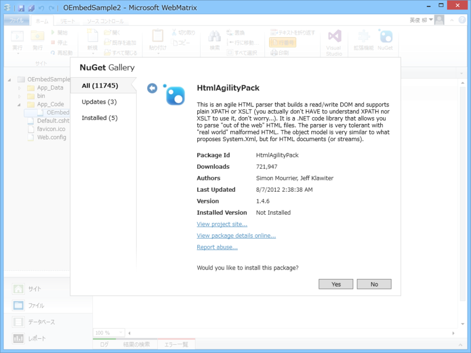
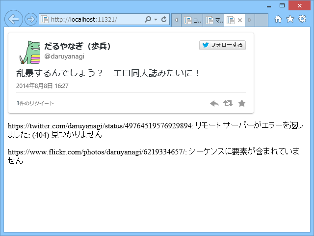

WebMatrix 3：oEmbed ヘルパーを作ってみた
公開日：
oEmbed is a format for allowing an embedded representation of a URL on third party sites. The simple API allows a website to display embedded content (such as photos or videos) when a user posts a link to that resource, without having to parse the resource directly.
要はこういうのです。
# はてな記法の場合 https://twitter.com/daruyanagi/status/497645195769298944:embed
乱暴するんでしょう？ エロ同人誌みたいに！
— だるやなぎ に天使が舞い降りた！ (@daruyanagi) 2014年8月8日
URL → 埋め込み HTML を得るための API って感じですかね。
oEmbed API の提供方法は二種類あります。
- API Endpoint があらかじめ公開されており、それを叩く
- link タグに埋め込み oEmbed のURLが埋め込まれいるので、それを叩く
両方とも提供してくれている場合もありますが（たとえば YouTube）、前者だけだったり（Flickr）、後者だけだったり（Twitter、一応公開されていますが一般的な API に比べてちょっとめんどいので link タグ探した方がいい）もします。
今回は後者だけ実装してみました。前者については、
で一度やったことがあります。URL パターンとエンドポイントのディクショナリでももっておいて、URL がパターンにマッチした時はエンドポイントを叩く……みたいに実装すれば汎用的になるかと。
準備

HTML から
<link rel="alternate" type="application/json+oembed" href="***" title="***">
みたいなのを探してとってくる必要があるので、スクレイパー御用達の CodePlex Archive を NuGet で追加しておきます。
コード
んじゃ、ガリガリ書いていきます。
~/App_Code/OEmbed.cshtml
まずは、ヘルパー部分を書き書き。
@using HtmlAgilityPack@helper GetHtml(string url){ try { using (var downloader = new WebClient()) { var html = downloader.DownloadString(url);
var document = new HtmlDocument(); document.LoadHtml(html);
url = document.DocumentNode.Descendants("link") .Where(_ => _.GetAttributeValue("type", string.Empty) == "application/json+oembed") .Select(_ => _.GetAttributeValue("href", string.Empty)) .First();
var oembed_data = downloader.DownloadString(url); var oembed_json = Json.Decode(oembed_data);
@Html.Raw(oembed_json.html) } } catch (Exception e) { <p class='error'>@url: @e.Message</p> } }
oEmbed は XML 形式か JSON 形式でレスポンスを返すのですが、Twitter は JSON のみをサポートします。どのサービスも JSON には対応していることが多いので、JSON だけ処理すればたいていは十分です。
あと、oembed_json.html を直接使うのは怖い。サニタイズしておいた方がいいかも。ほんとはキャッシュの仕組みとかも入れておきたいですね。
~/Default.cshtml
次にテスト用のページを書きかき。
<!DOCTYPE html><html lang="ja"> <head> <meta http-equiv="Content-Type" content="text/html; charset=utf-8"/> <meta charset="utf-8" /> <title>マイ サイトのタイトル</title> <link href="~/favicon.ico" rel="shortcut icon" type="image/x-icon" /> </head> <body> @OEmbed.GetHtml("https://twitter.com/daruyanagi/status/497645195769298944") @OEmbed.GetHtml("https://twitter.com/daruyanagi/status/49764519576929894") @OEmbed.GetHtml("https://www.flickr.com/photos/daruyanagi/6219334657/") </body> </html>
結果

2番目は URL を間違ってみた。3番目は oEmbed 対応だけど link タグ形式ではないサービス（Flickr）で試してみた。Flickr については、API Endpoint を叩いてーという処理が必要になりますね。